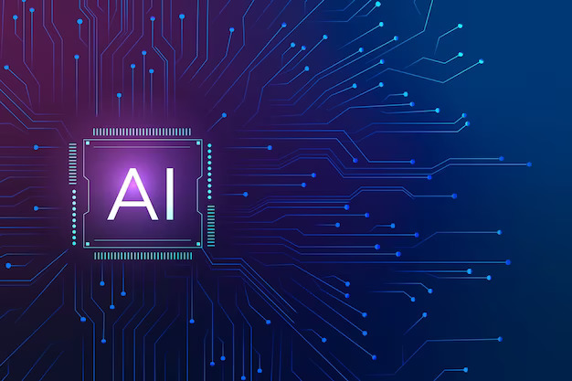

"Unlocking the Power of AI, A Journey into Artificial Intelligence"
Last Updated: August 2, 2018
"Unlocking the Power of AI, A Journey into Artificial Intelligence".Artificial Intelligence (AI) has emerged as one of the most transformative technologies of our time, promising to reshape industries, enhance our daily lives, and push the boundaries of what's possible. In "Unlocking the Power of AI: A Journey into Artificial Intelligence," we embark on an exploration of this fascinating realm, delving deep into its various facets, from its origins and fundamental concepts to its practical applications and ethical considerations. Join us on this journey as we unlock the immense potential and profound impact of AI.
The historical context of AI is a rich tapestry of human ingenuity. Pioneers like Alan Turing and the legendary Dartmouth Workshop laid the foundation for what we now know as AI. It's a story of ideas, algorithms, and the relentless pursuit of mimicking human intelligence.
ATo truly grasp AI's potential, it's essential to understand its inner workings. AI isn't magic; it's a complex interplay of algorithms, data, and computing power. Dive into concepts like machine learning, deep learning, neural networks, and algorithms that underpin AI's capabilities.AI isn't confined to the realm of science fiction; it's a real-world force driving innovation across industries. Discover how AI is revolutionizing healthcare, finance, autonomous AI isn't confined to the realm of science fiction; it's a real-world force driving innovation across industries. Discover how AI is revolutionizing healthcare, finance, autonomous vehicles, and even customer service. These practical applications showcase AI's tangible benefits.Artificial Intelligence Applications AI is widely used in the field of healthcare. Companies are attempting to develop technologies that will allow for rapid diagnosis. Artificial Intelligence would be able to operate on patients without the need for human oversight. Surgical procedures based on technology are already being performed. Artificial Intelligence would save a lot of our time. The use of robots would decrease human labour. For example, in industries robots are used which have saved a lot of human effort and time. In the field of education, AI has the potential to be very effective. It can bring innovative ways of teaching students with the help of which students will be able to learn the concepts better. Artificial intelligence is the future of innovative technology as we can use it in many fields. For example, it can be used in the Military sector, Industrial sector, Automobiles, etc. In the coming years, we will be able to see more applications of AI as this technology is evolving day by day. Marketing: Artificial Intelligence provides a deep knowledge of consumers and potential clients to the marketers by enabling them to deliver information at the right time. Through AI solutions, the marketers can refine their campaigns and strategies. Agriculture: AI technology can be used to detect diseases in plants, pests, and poor plant nutrition. With the help of AI, farmers can analyze the weather conditions, temperature, water usage, and condition of the soil. Banking: Fraudulent activities can be detected through AI solutions. AI bots, digital payment advisers can create a high quality of service. Health Care: Artificial Intelligence can surpass human cognition in the analysis, diagnosis, and complication of complicated medical data.